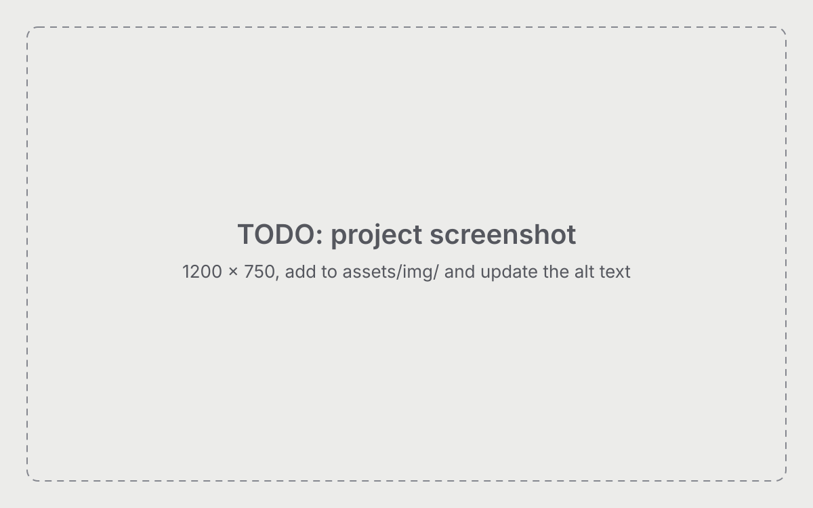

TODO Project title
TODO one-line outcome with a number (same as on the Home card)
Problem
TODO what was broken or missing, for whom, and what it cost. Facts, not adjectives.
Approach
TODO what you decided to do and why that over the alternatives. Show your judgment: constraints, trade-offs, what you chose not to build.

Outcome
- TODO numberTODO what it measures, and versus what
- TODO numberTODO what it measures, and versus what
TODO one or two sentences: what changed for the user or the business, and what you would do next.